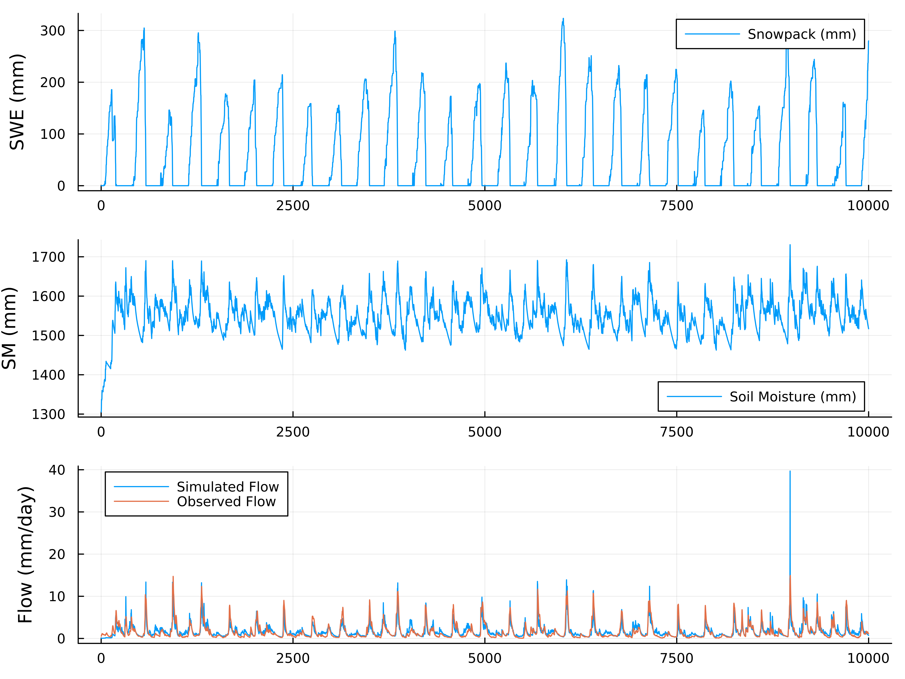

Getting start with HydroModels.jl
This guide provides a comprehensive introduction to HydroModels.jl, a Julia package for hydrological modeling. We'll walk through the installation process, build a complete ExpHydro model, and demonstrate how to run simulations with real-world data.
Install HydroModels.jl
HydroModels.jl can be installed directly from the Julia package manager. Open a Julia REPL and enter the following command:
] add HydroModelsFor the latest development version, you can install directly from the GitHub repository:
] add https://github.com/chooron/HydroModels.jlAfter installation, load the package with:
using HydroModels
using ComponentArrays # For parameter handling
using CSV, DataFrames # For data input/outputBuild a ExpHydro Model
Introduction to ExpHydro Model
The ExpHydro model is a conceptual rainfall-runoff model that simulates watershed hydrology through a series of interconnected processes. It consists of two main components:
- Snowpack Bucket: Handles snow accumulation and melt processes
\[\begin{aligned} & pet = 29.8 \cdot lday \cdot 24 \cdot 0.611 \cdot \frac{\exp(17.3 \cdot temp)}{temp + 237.3} \cdot \frac{1}{temp + 273.2} & \quad & (1) \\ & snowfall = H(T_{min} - temp) \cdot prcp & \quad & (2) \\ & rainfall = H(temp - T_{min}) \cdot prcp & \quad & (3) \\ & melt = H(temp - T_{max}) \cdot H(snowpack) \cdot \min(snowpack, D_f \cdot (temp - T_{max})) & \quad & (4) \\ & \frac{d(snowpack)}{dt} = snowfall - melt & \quad & (5) \\ \end{aligned}\]
- Soil Water Bucket: Manages soil moisture, evapotranspiration, and runoff generation
\[\begin{aligned} & evap = H(soilwater) \cdot pet \cdot \min\left(1.0, \frac{soilwater}{S_{max}}\right) & \quad & (6) \\ & baseflow = H(soilwater) \cdot Q_{max} \cdot \exp\left(-f \cdot \max(0.0, S_{max} - soilwater)\right) & \quad & (7) \\ & surfaceflow = \max(0.0, soilwater - S_{max}) & \quad & (8) \\ & flow = baseflow + surfaceflow & \quad & (9) \\ & \frac{d(soilwater)}{dt} = rainfall + melt - evap - flow & \quad & (10) \\ \end{aligned}\]
where $H(x)$ represents the Heaviside step function that equals 1 when $x > 0$ and 0 otherwise; $T_{min}$, $T_{max}$, $D_f$, $S_{max}$, $Q_{max}$, and $f$ are model parameters; $temp$, $lday$, and $prcp$ are input variables; $snowpack$ and $soilwater$ are state variables; and the remaining variables are intermediate calculation variables.
The model uses temperature thresholds to partition precipitation into rainfall and snowfall, and employs exponential functions to represent soil moisture dynamics. Its relative simplicity combined with physical process representation makes it an excellent starting point for hydrological modeling.
Key parameters in the ExpHydro model include:
Tmin: Minimum temperature threshold for snow/rain partitioningTmax: Temperature threshold for snowmelt initiationDf: Degree-day factor for snowmelt calculationSmax: Maximum soil water storage capacityf: Parameter controlling baseflow recessionQmax: Maximum baseflow rate
Build an ExpHydro Model in HydroModels.jl
HydroModels.jl provides a flexible framework for constructing hydrological models using a component-based approach. Let's build the ExpHydro model step by step.
1. Define the Variables and Parameters based on ModelingToolkit.jl
First, we need to define the variables and parameters that will be used in our model. HydroModels.jl leverages ModelingToolkit.jl for symbolic representation of model components.
# Import necessary functions
using HydroModels
# Define the step function used in hydrological processes
step_func(x) = (tanh(5.0 * x) + 1.0) * 0.5
# Define variables and parameters (the macro @variables and @parameters are from ModelingToolkit.jl)
@variables temp lday prcp pet snowfall rainfall snowpack melt
@variables soilwater evap baseflow surfaceflow flow
@parameters Tmin Tmax Df Smax Qmax fHere, we define:
- Input variables:
temp(temperature),lday(day length),prcp(precipitation) - State variables:
snowpack(snow water equivalent),soilwater(soil moisture) - Intermediate flux variables:
snowfall,rainfall,melt,pet(potential evapotranspiration), etc. - Output variables:
flow(total streamflow) - Model parameters:
Tmin,Tmax,Df,Smax,Qmax,f
2. Build the ExpHydro Model
With variables and parameters defined, we can now construct the complete ExpHydro model using HydroModels.jl's macro-based syntax:
# Define the snow component
snow_bucket = @hydrobucket :snow begin
fluxes = begin
@hydroflux pet ~ 29.8 * lday * 24 * 0.611 * exp((17.3 * temp) / (temp + 237.3)) / (temp + 273.2)
@hydroflux snowfall ~ step_func(Tmin - temp) * prcp
@hydroflux rainfall ~ step_func(temp - Tmin) * prcp
@hydroflux melt ~ step_func(temp - Tmax) * step_func(snowpack) * min(snowpack, Df * (temp - Tmax))
end
dfluxes = begin
@stateflux snowpack ~ snowfall - melt
end
end
# Define the soil water component
soil_bucket = @hydrobucket :soil begin
fluxes = begin
@hydroflux evap ~ step_func(soilwater) * pet * min(1.0, soilwater / Smax)
@hydroflux baseflow ~ step_func(soilwater) * Qmax * exp(-f * (max(0.0, Smax - soilwater)))
@hydroflux surfaceflow ~ max(0.0, soilwater - Smax)
@hydroflux flow ~ baseflow + surfaceflow
end
dfluxes = begin
@stateflux soilwater ~ (rainfall + melt) - (evap + flow)
end
end
# Combine components into the complete ExpHydro model
exphydro_model = @hydromodel :exphydro begin
snow_bucket
soil_bucket
endStep by Step Analysis of the Build Process
Let's break down the model construction process to understand each component in detail.
1. First Build one Hydrological Flux
A hydrological flux represents a specific process in the water cycle. For example, the snowfall flux is defined as:
snowfall_flux = @hydroflux snowfall ~ step_func(Tmin - temp) * prcpThis equation partitions precipitation into snowfall based on temperature. When temperature is below Tmin, the step function approaches 1, and precipitation is treated as snowfall. The ~ operator establishes the mathematical relationship between variables.
Each flux has:
- Input variables (right side of
~): Variables used to calculate the flux - Output variable (left side of
~): The resulting flux value - Parameters: Model coefficients used in the calculation
2. Build All Fluxes inner the Snowpack Bucket
The snowpack bucket contains multiple fluxes that work together to simulate snow processes:
fluxes = begin
@hydroflux pet ~ 29.8 * lday * 24 * 0.611 * exp((17.3 * temp) / (temp + 237.3)) / (temp + 273.2)
@hydroflux snowfall ~ step_func(Tmin - temp) * prcp
@hydroflux rainfall ~ step_func(temp - Tmin) * prcp
@hydroflux melt ~ step_func(temp - Tmax) * step_func(snowpack) * min(snowpack, Df * (temp - Tmax))
endThese fluxes represent:
pet: Potential evapotranspiration calculated using a temperature-based formulasnowfall: Precipitation that falls as snow when temperature is belowTminrainfall: Precipitation that falls as rain when temperature is aboveTminmelt: Snowmelt that occurs when temperature exceedsTmax, limited by available snowpack
3. Build the Snowpack Bucket Based on these Flux
A bucket in HydroModels.jl represents a storage component with state variables that change over time. The @hydrobucket macro creates a complete hydrological storage unit that encapsulates both water movement processes and state evolution equations.
snow_bucket = @hydrobucket :snow begin
fluxes = begin
@hydroflux pet ~ 29.8 * lday * 24 * 0.611 * exp((17.3 * temp) / (temp + 237.3)) / (temp + 273.2)
@hydroflux snowfall ~ step_func(Tmin - temp) * prcp
@hydroflux rainfall ~ step_func(temp - Tmin) * prcp
@hydroflux melt ~ step_func(temp - Tmax) * step_func(snowpack) * min(snowpack, Df * (temp - Tmax))
end
dfluxes = begin
@stateflux snowpack ~ snowfall - melt
end
endThe bucket consists of two main sections:
- fluxes: Defines the hydrological processes that move water in and out of the bucket. Each flux is created with the
@hydrofluxmacro and represents a specific hydrological process (e.g., snowfall, rainfall, melt). - dfluxes: Specifies how state variables change over time using the
@statefluxmacro. In this example, the snowpack state variable changes according to the equationsnowpack ~ snowfall - melt, meaning the change in snowpack equals snowfall minus snowmelt.
The first argument (:snow) provides a name for the bucket, which helps with identification and debugging. When the model runs, these equations are automatically converted into a system of differential equations that will be solved by the selected numerical solver.
4. Build ExpHydro Model Based on the Snowpack Bucket and Soilwater Bucket
After creating the snow bucket, we need to define the soil water bucket that handles soil moisture dynamics, evapotranspiration, and runoff generation:
soil_bucket = @hydrobucket :soil begin
fluxes = begin
@hydroflux evap ~ step_func(soilwater) * pet * min(1.0, soilwater / Smax)
@hydroflux baseflow ~ step_func(soilwater) * Qmax * exp(-f * (max(0.0, Smax - soilwater)))
@hydroflux surfaceflow ~ max(0.0, soilwater - Smax)
@hydroflux flow ~ baseflow + surfaceflow
end
dfluxes = begin
@stateflux soilwater ~ (rainfall + melt) - (evap + flow)
end
endThe soil bucket includes several important hydrological processes:
- Evapotranspiration (
evap): Water loss from soil to atmosphere, dependent on potential evapotranspiration (pet) and available soil moisture - Baseflow (
baseflow): Subsurface flow that follows an exponential relationship with soil moisture deficit - Surface runoff (
surfaceflow): Excess water when soil moisture exceeds maximum capacity (Smax) - Total streamflow (
flow): Combined baseflow and surface runoff
The state equation for soil moisture (soilwater) accounts for all inputs (rainfall and snowmelt) and outputs (evapotranspiration and streamflow).
Finally, we combine the snow and soil components into a complete model using the @hydromodel macro:
exphydro_model = @hydromodel :exphydro begin
snow_bucket
soil_bucket
endThis creates a model named "exphydro" with two interconnected components. HydroModels.jl automatically handles the connections between components based on variable names. For example, the rainfall and melt outputs from the snow bucket are used as inputs to the soil bucket, and the pet calculation from the snow bucket is used in the evapotranspiration calculation in the soil bucket.
The @hydromodel macro performs several important tasks:
- Analyzes dependencies between components to determine the correct execution order
- Creates a computational graph that efficiently routes information between components
- Manages state variables across the entire model
- Prepares the model for simulation with various solver options
Run the ExpHydro Model With Real Data
Preparation
Before running the model, we need to prepare input data, parameters, and initial states.
1. Load 01013500 forcing data from the CAMELS Dataset
The CAMELS (Catchment Attributes and Meteorology for Large-sample Studies) dataset provides hydrometeorological time series for many watersheds. We'll use data from basin 01013500 as an example:
# Load forcing data
file_path = "data/exphydro/01013500.csv"
df = DataFrame(CSV.File(file_path))
# Select a time period for simulation
ts = collect(1:10000) # One year of daily data
# Extract required input variables
input_data = (
lday = df[ts, "dayl(day)"], # Day length
temp = df[ts, "tmean(C)"], # Mean temperature
prcp = df[ts, "prcp(mm/day)"] # Precipitation
)
q_data = df[ts, "flow(mm)"]
# Convert to matrix format required by HydroModels.jl
# We need to make the input matrix in the sort of the input names of the model
input_matrix = reduce(hcat, input_data[HydroModels.get_input_names(exphydro_model)]) |> permutedimsIt is worth noting that in the line input_matrix = reduce(hcat, input_data[HydroModels.get_input_names(exphydro_model)]) |> permutedims we need to get the input variable names of the model according to get_input_names(exphydro_model) so that the input matrix has the correct order.
2. Prepare Parameters and Initial States
Next, we set up the model parameters and initial states:
# Define parameter values (calibrated for basin 01013500)
# Create parameter ComponentVector
params = ComponentVector(
f = 0.0167 , # Baseflow recession parameter
Smax = 1709.46 , # Maximum soil water storage (mm)
Qmax = 18.47 , # Maximum baseflow rate (mm/day)
Df = 2.674 , # Degree-day factor for snowmelt (mm/°C/day)
Tmax = 0.17 , # Temperature threshold for snowmelt (°C)
Tmin = -2.09 # Temperature threshold for snow/rain partitioning (°C)
)
# Set initial states
init_states = ComponentVector(
snowpack = 0.0, # Initial snow water equivalent (mm)
soilwater = 1303.00 # Initial soil moisture (mm)
)
# Combine into parameter array structure
pas = ComponentVector(params = params)The input parameters and initial states are stored in the type provided by ComponentArrays.jl. Each parameter name corresponds to a parameter value, and finally they are unified into pas. Params represents the hydrological model parameters, and nns represents the neural network parameters (see neuralnetwork_embeding.md)
3. Prepare the Running Config
Finally, we configure the simulation settings:
using DataInterpolations
# Define simulation configuration
config = (
# Time indices for simulation
timeidx = ts,
# Solver settings
solver = HydroModels.ManualSolver(mutable = true),
# Interpolation method for inputs
interp = LinearInterpolation
)The configuration includes:
timeidx: Time indices for the simulation periodsolver: Numerical solver for state equations (ManualSolver uses explicit Euler method)interp: Method for interpolating input data between time steps, theLinearInterpolationis provided by DataInterpolations.jl.
Run Model
1. Run the Model
With everything prepared, we can now run the ExpHydro model:
# Execute the model simulation
output_matrix = exphydro_model(
input_matrix, # Input data matrix
pas, # Parameters
initstates = init_states, # Initial states
config = config # Configuration
)
# Extract results into named variables
output_names = vcat(
HydroModels.get_state_names(exphydro_model),
HydroModels.get_output_names(exphydro_model)
)
output_df = NamedTuple{Tuple(output_names)}(eachslice(results, dims=1)) |> DataFrameThe types defined in HydroModels.jl all have the callable capability. The exphydro_model of the HydroModel type obtains the calculation result output_matrix through input data, parameters, initial state and operation settings. Its format is consistent with the input data format. The first dimension stores the variable name, and the second dimension stores the time series. The order of the variable name is the state name and output name of exphydro_model. Here we convert it to the DataFrame type and get the result as follows:
10000×10 DataFrame
Row │ snowpack soilwater pet snowfall rainfall melt evap baseflow surfaceflow flow
│ Float64 Float64 Float64 Float64 Float64 Float64 Float64 Float64 Float64 Float64
───────┼─────────────────────────────────────────────────────────────────────────────────────────────────────────
1 │ 0.0 1305.21 1.13779 0.0 3.1 0.0 0.868733 0.0216058 0.0 0.0216058
2 │ 0.0 1308.28 1.51019 0.0 4.24 0.0 1.15577 0.0227406 0.0 0.0227406
3 │ 0.0 1315.03 1.63204 0.0 8.02 0.0 1.25547 0.0254533 0.0 0.0254533
⋮ │ ⋮ ⋮ ⋮ ⋮ ⋮ ⋮ ⋮ ⋮ ⋮ ⋮
9999 │ 279.712 1517.91 0.311022 1.84 0.0 -0.0 0.276171 0.753699 0.0 0.753699
10000 │ 279.852 1517.0 0.176836 0.14 0.0 -0.0 0.156927 0.742322 0.0 0.742322
9995 rows omitted2. Check the Run Cost
We can benchmark the model performance to assess computational efficiency:
using BenchmarkTools
# Benchmark model execution
@btime exphydro_model(
$input_matrix,
$pas,
initstates = $init_states,
config = $config
)992.800 μs (56349 allocations: 2.90 MiB) # 1,000 data points, using HydroModels.ManualSolver(mutable = true)
10.348 ms (596349 allocations: 29.40 MiB) # 10,000 data points, using HydroModels.ManualSolver(mutable = true)These benchmark results demonstrate the impressive computational efficiency of HydroModels.jl:
- For 1,000 data points (approximately 3 years of daily data), the model completes execution in less than 1 millisecond (992.8 microseconds), allocating only 2.90 MiB of memory.
- For 10,000 data points (approximately 27 years of daily data), execution time scales linearly to about 10.3 milliseconds with 29.40 MiB of memory allocation.
We will discuss more about computational performance and gradient solving performance in the benchmark.
3. Explain the Results
The simulation results contain time series for all state variables and output fluxes:
# Plot the results
using Plots
# Create a multi-panel plot
p1 = plot(ts, output_data.snowpack, label="Snowpack (mm)", ylabel="SWE (mm)")
p2 = plot(ts, output_data.soilwater, label="Soil Moisture (mm)", ylabel="SM (mm)")
p3 = plot(ts, output_data.flow, label="Simulated Flow", ylabel="Flow (mm/day)")
# Add observed flow if available
if "flow(mm)" in names(df)
plot!(p3, ts, q_data, label="Observed Flow")
end
# Combine plots
plot(p1, p2, p3, layout=(3,1), size=(800, 600))
The key outputs include:
- Snowpack: Shows snow accumulation during winter months and melting during spring
- Soil Moisture: Reflects the balance between water inputs (rainfall, snowmelt) and outputs (evaporation, runoff)
- Flow: The total streamflow, which can be compared with observations to assess model performance
Additional analysis can include:
# Calculate performance metrics if observed data is available
observed_flow = df[ts, "flow(mm)"]
simulated_flow = output_data.flow
# Nash-Sutcliffe Efficiency
nse = 1 - sum((observed_flow - simulated_flow).^2) / sum((observed_flow .- mean(observed_flow)).^2)
# Percent Bias
pbias = 100 * (sum(simulated_flow) - sum(observed_flow)) / sum(observed_flow)
println("Nash-Sutcliffe Efficiency: ", nse)
println("Percent Bias: ", pbias, "%")Nash-Sutcliffe Efficiency: 0.7323810502829138
Percent Bias: 4.127942033470476%Conclusion
In this guide, we've walked through the process of building and running a hydrological model using HydroModels.jl. The ExpHydro model demonstrates the core capabilities of the framework, including:
- Component-Based Modeling: Building complex models from simpler components
- Symbolic Model Definition: Using mathematical expressions to define hydrological processes
- Efficient Simulation: Running models with real-world data
- Result Analysis: Extracting and visualizing simulation outputs
HydroModels.jl provides a flexible and powerful platform for hydrological modeling, suitable for both research and operational applications. The framework's modular design allows for easy extension and customization, enabling users to implement a wide range of hydrological models.
Next steps include:
- Embedding neural networks in hydrological models
- Adding unit hydrograph calculation modules to hydrological models
- Building and computing multi-node models (distributed and semi-distributed)
- Using solvers from DifferentialEquations.jl
- Optimizing model parameters based on Optimization.jl